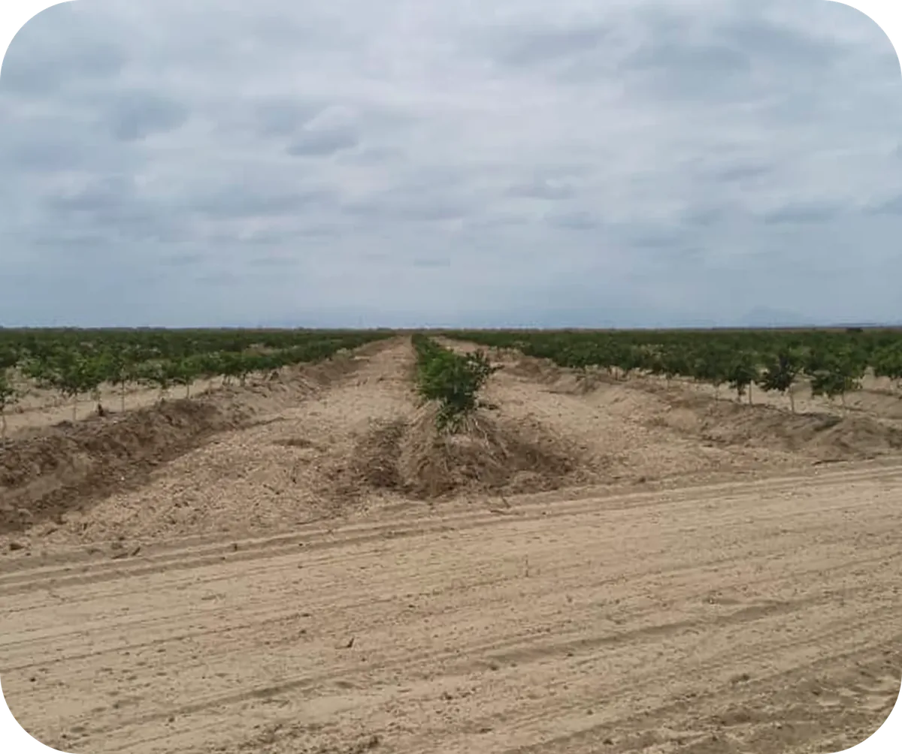

Sur Andina is a 500-hectare agribusiness project located in Olmos, Peru, divided between citrus orchards and other crops. The project involved the full development of the land, incorporating infrastructure, water resources, irrigation systems, planting and other strategic works required to support efficient agricultural operations focused on export markets.
